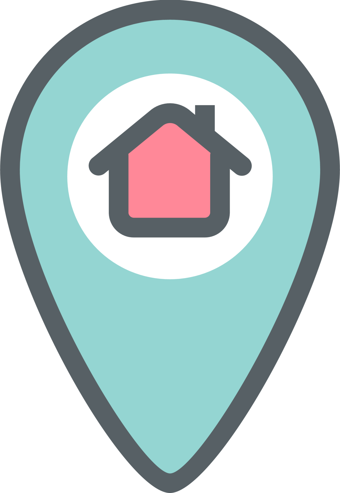
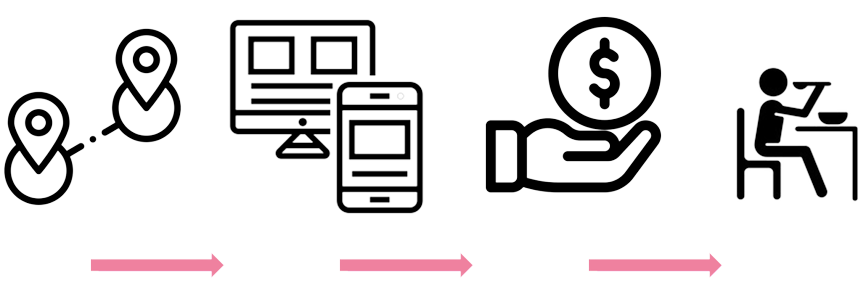

Comer & Compartir
La coordinación general del Sistema Municipal DIF, dirige la iniciativa de comedores comunitarios, que ofrecen alimentos por una cuota de recuperación simbólica de 13 pesos.
Se cuentan con decenas de comedores en múltiples colonias que sirven alrededor de 100 comidas al día. Se pueden consultar las ubicaciones exactas en el mapa interactivo de está página.
Si deseas aprovechar de está iniciativa, puedes registrarte también en está misma página con tus datos. De esta manera podrás ingresar a los comedores más ágilmente.

¿Cómo puedes aprovechar de esta iniciativa?
- Descaga la aplicación móvil "Comedores Solidarios" y regístrate con tus datos, obteniendo tu qr personal.
- Asiste al comedor que te quede más cerca, consultando las ubicaciones y accesabilidad en el mapa.
- Al llegar, utiliza tu qr personal para acceder ágilmente al comedor, y paga la cuota de 13 pesos por cada comida que pidas.
- ¡Disfruta de tus alimentos!
